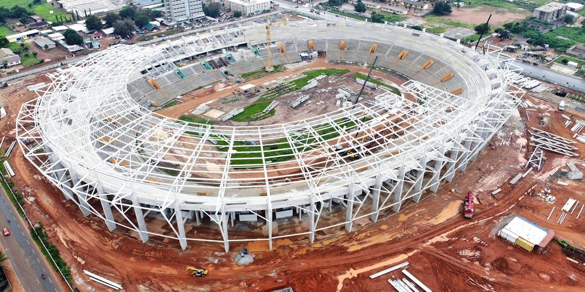
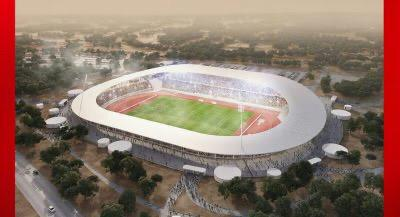
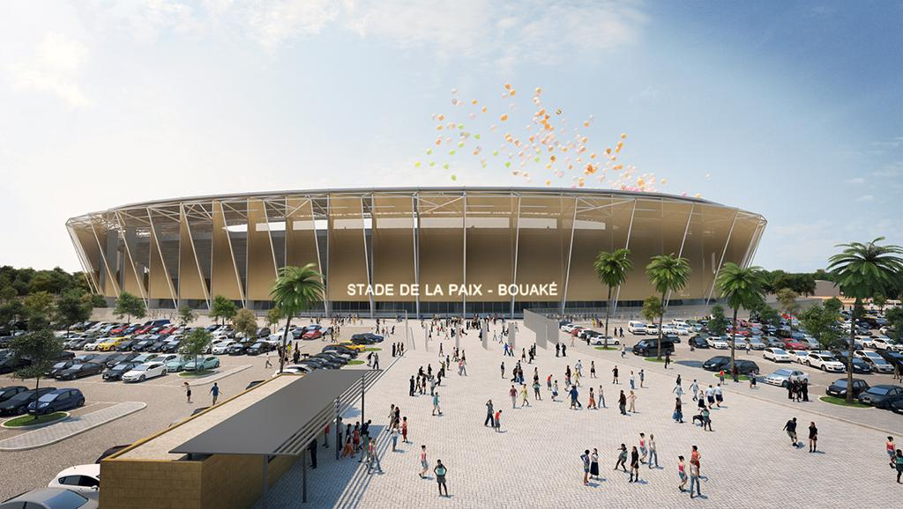
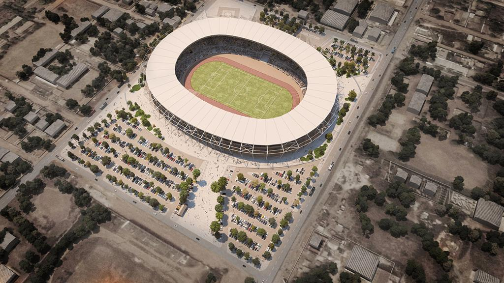
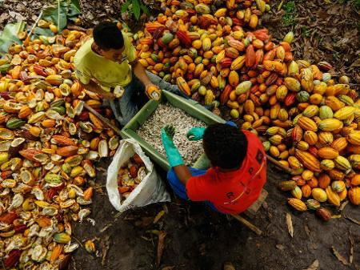
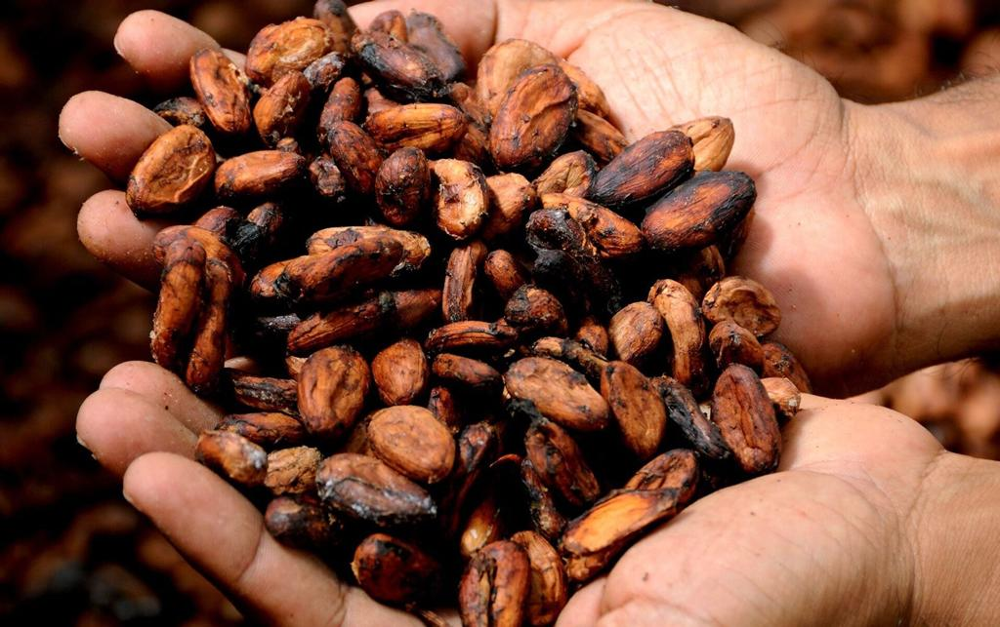
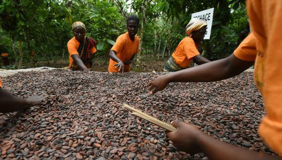
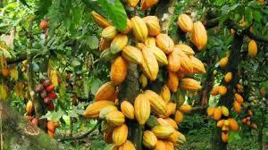
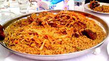
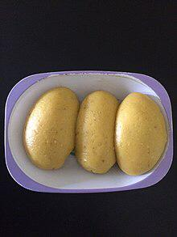

O campeonato africano das Nações, taça das Nãções Africanas ou Copa Africana de nações de 2024 será a 34ª edição do torneio organizado pela Confederação Africana de futebol. A fase final dessa edição ocorrerá na Costa do Marfim pela 2ª vez, após a edicão de 1984.
   A Costa do Marfim é um grande produtor de cacau, café e algodão. A Costa do Marfim é uma das grandes nações mais prósperas do oeste africano, isso se deve ao desenvolvimento agricola, principalmente a prdução de café e cacau (o país é o maior produtor do Cacau do mundo).
   A cozinha marfinense é a cozinha tradicional da Costa do Marfim, e é baseada em tubérculos, grãos, frango, frutos do mar, peixe, fruta fresca, vegetais, e especiarias.Ela é muito semelhante a culinária dos países vizinhos da África.
 